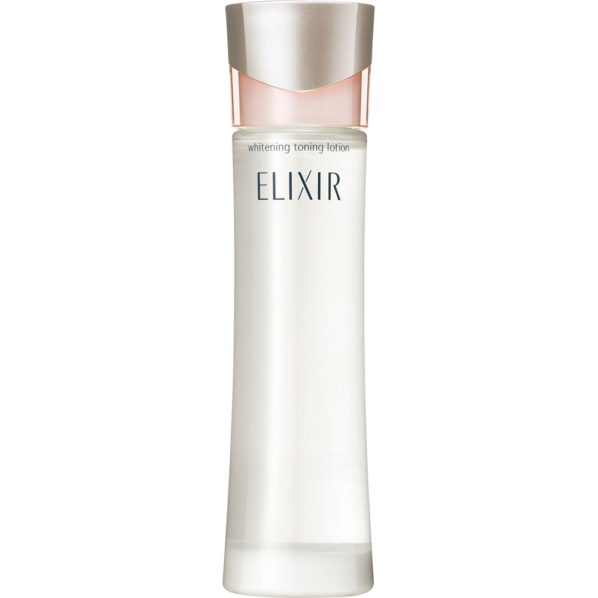

返回列表
产品名称：エリクシール ホワイト トーニングローション

資生堂 エリクシール ホワイト トーニングローション －（医薬部外品）
メーカー 資生堂
JANコード 4901872646630
商品の特徴
さらりと引きしまった肌へ
薬用です。
- 成分・分量
- 【成分】
トラネキサム酸※、水溶性コラーゲン（Ｆ）、塩酸リジン、酵母エキス（３）、クララエキス（１）、Ｌ－アルギニン塩酸塩、精製水、エタノール、１、３－ブチレングリコール、グリセリン、ポリアクリル酸アルキル、クエン酸ナトリウム、ベントナイト、流動パラフィン、ポリ（オキシエチレン・オキシプロピレン）メチルポリシロキサン共重合体、ジプロピレングリコール、クエン酸、エデト酸三ナトリウム、ｌ－メントール、ピロ亜硫酸ナトリウム、フェノキシエタノール、香料
※は「有効成分」無表示は「その他の成分」
- 用法及び用量
- 【使用回数】
・使用する前に、よく振ります。
・乳液の後、コットンに５００円硬貨大よりやや大きめにたっぷり（約２ｍｌ）とり、指にはさみ、肌がひんやりするまで、
顔のすみずみまでていねいに風を送るように、下から上へパッティングします。